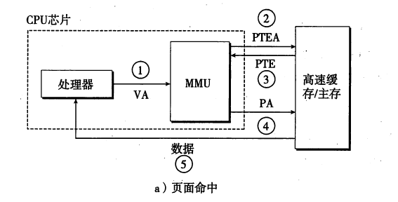
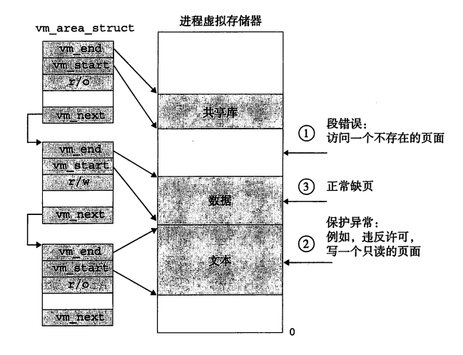
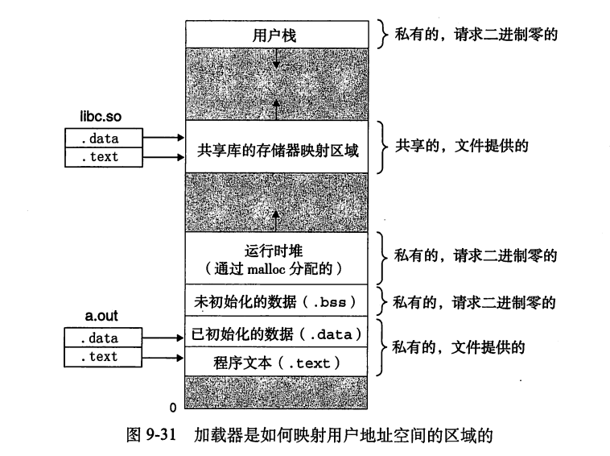
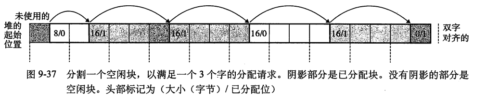
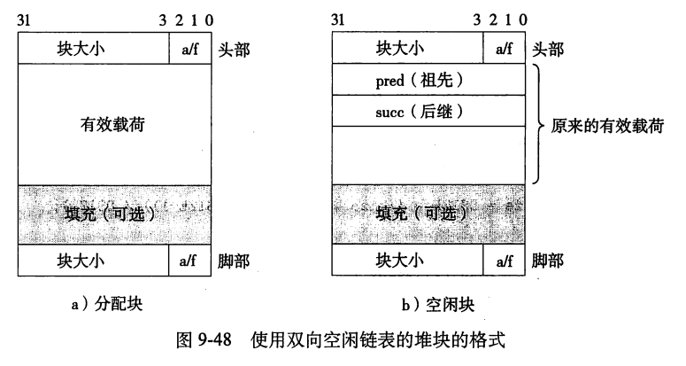

CSAPP_阅读笔记_9_虚拟内存
为了更加有效地管理内存并减少错误的发生，现代系统提供了一种对主存储器的抽象，即虚拟内存（Virtual Memory，VM）。虚拟内存是硬件异常、硬件地址转换、主存储器、磁盘文件和内核软件之间的优雅交互，它为每个进程提供了一个大的、统一的和私有的地址空间。
虚拟内存有以下三个重要功能：
- 将主存储器作为磁盘的缓存，只保留主存中的活跃区域并根据需要不断地在两者之间传输数据；
- 为每个进程提供统一的地址空间，从而简化内存管理；
- 保护每个进程的地址空间不被其他进程所破坏。
虚拟存储器是计算机系统最重要的概念之一。它成功的一个主要原因就是因为它是沉默地自动地工作的，不需要应用程序员的任何干涉。既然虚拟存储器在幕后工作得如此之好，为什么程序员还需要理解它呢?有以下几个原因:
- 虚拟存储器是中心的。虚拟存储器遍及计算机系统的所有层面，在硬件异常、汇编器、链接器、加载器、共享对象、文件和进程的设计中扮演着重要角色。理解虚拟存储器将帮助你更好地理解系统通常是如何工作的。
- 虚拟存储器是强大的。虚拟存储器给予应用程序强大的能力，可以创建和销毁存储器片(chunk)、将存储器片映射到磁盘文件的某个部分，以及与其他进程共享存储器。比如，你知道你可以通过读写存储器位置读或者修改一个磁盘文件的内容吗?或者是你可以加载一个文件的内容到存储器中，而不需要进行任何显式的拷贝吗?理解虚拟存储器将帮助你利用它的强大功能在你的应用程序中添加动力。
- 虚拟存储器是危险的。每次应用程序引用一个变量、间接引用一个指针，或者调用一个诸如 malloc这样的动态分配程序时，它就会和虚拟存储器发生交互。如果虚拟存储器使用不当，应用将遇到复杂危险的与存储器有关的错误。例如，一个带有错误指针的程序可以立即崩溃于“段错误”或者“保护错误”，它可能在崩溃之前还默默地运行几个小时，或者是最令人惊慌地，运行完成却产生不正确的结果。理解虚拟存储器以及诸如malloc之
类的管理虚拟存储器的分配程序，可以帮助你避免这些错误。
1.物理和虚拟寻址
主存中的每个字节都有一个唯一的物理地址（Physical Address，PA），CPU 使用物理地址访问内存的方式被称为物理寻址（Physical Addressing）：
如上图所示，当CPU执行这条加载指令时，它会生成一个有效物理地址，通过存储器总线，把它传递给主存。主存取出从物理地址4处开始的4字节的字，并将它返回给CPU，CPU 会将它存放在一个寄存器里。
CPU 也可以通过虚拟地址（Virtual Address，VA）访问主存，只不过该地址在发送到主存之前需要被转换为适当的物理地址。这种寻址方式被称为虚拟寻址（Virtual Addressing）：

地址转换（Address Translation ）需要 CPU 硬件和操作系统之间密切合作，位于 CPU 芯片上的内存管理单元（Memory Management Unit，MMU）根据 页表（Page Table) 动态地将虚拟地址转换为物理地址。页表存储在主存中，其内容由操作系统维护。
2.地址空间
地址空间（Address Space）是一组有序的非负整数地址：
如果这些整数是连续的，我们就称其为线性地址空间（Linear Address Space）。在拥有虚拟内存的系统中，CPU 从 n 位线性地址空间中生成虚拟地址，该虚拟地址空间共有 N = 2^n 个地址：
现代系统通常支持 32 位或 64 位虚拟地址空间。同样地，系统也有一个物理地址空间：
与虚拟地址空间不同，M 不一定为 2 的幂。但为了简化讨论，我们假设 M = 2^m。
地址空间明确地将数据对象（字节）和其属性（地址）区分开来，因此每个数据对象都可以有多个独立的地址，这便是虚拟内存的基本思想。主存中的每个字节都有一个从物理地址空间中选择的物理地址，以及一个从虚拟地址空间中选择的虚拟地址。
3.虚拟内存作为缓存的工具
概念上而言，虚拟存储器(VM)被组织为一个由存放在磁盘上的N个连续的字节大小的单元组成的数组。每字节都有一个唯一的虚拟地址，这个唯一的虚拟地址是作为到数组的索引的。磁盘上数组的内容被缓存在主存中。和存储器层次结构中其他缓存一样，磁盘与主存之间以 Block为单位传输数据。而在虚拟内存系统中，Block 被称为虚拟页面（Virtual Page，VP），其大小为 P = 2^p。类似地，物理内存也可以被划分为多个大小为 P 的物理页面（Physical Page，PP)。
虚拟页面有以下三种状态：
- 未分配（Unallocated）：没有被进程申请使用的页面，不占用任何磁盘空间；
- 未缓存（Uncached）：仅加载到磁盘而未缓存到主存中的页面；
- 已缓存（Cached）：已缓存在主存中的页面。
示例展示了一个有8个虚拟页的小虚拟存储器。虚拟页0和3还没有被分配，因此在磁盘上还不存在。虚拟页1、4和6被缓存在物理存储器中。页2、5和7已经被分配了，但是当前并未缓存在主存中。
3.1 DRAM 缓存
我们将 CPU 和主存之间的 L1、L2 和 L3 级缓存称为 SRAM 缓存，而将主存中用来缓存虚拟页面的缓存称为 DRAM 缓存。
与 SRAM 缓存相比，DRAM 缓存发生缓存缺失的成本很高（需要从磁盘中加载数据），因此虚拟页面往往比较大——通常为 4 KB 到 2 MB。DRAM 缓存是全关联型的，这样任何一个虚拟页面都可以放在任何一个物理页面中。
3.2 页表
页表是由**页表条目（Page Table Entries，PTEs）**组成的数组。每个虚拟页面在页表都有一条 PTE，它在页表中的偏移量是固定的。每条 PTE 中都包含了一个表示该虚拟页面是否已缓存的有效位，以及一个 n 位的地址字段。若有效位为 1，则地址字段是缓存该页面的物理页面的起始地址；若有效位为 0 且地址字段为空，则代表该虚拟页面未分配；若有效位为 0 且地址字段非空，则地址字段是该页面在磁盘上的起始地址。
如上图所示，系统中存在 8 个虚拟页面和 4 个物理页面：页面 1，2，4 和 7 缓存在 DRAM 中；页面 3 和 6 已分配但未缓存；页面 0 和 5 未分配。
3.3 缺页故障
我们将访问 DRAM 缓存时发生的缓存缺失称为缺页故障（Page Fault）。若 CPU 引用上图页面 3 中的某个字，地址转换硬件会从主存中读取 PTE 3 ，然后根据其有效位判断出该页面未缓存。缺页故障异常将调用内核中的异常处理程序，选择受害者页面（Victim Page）逐出主存。
在本例中，受害者页面为 VP 4，因此内核会先将 PTE 4 中的有效位重置为 0。如果该页面已发生更改，内核还需要将其复制回磁盘。接下来，内核把 VP 3 从磁盘复制到主存中的 PP 3，并更新 PTE 3 中的有效位。下图展示了异常处理程序返回后示例页表的状态：
3.4 分配页面
上图展示了分配一个新的虚拟页面（如进程调用malloc）后页表的变化。操作系统先在磁盘上开辟空间，然后更新 PTE 5 使 VP 5 指向磁盘上新创建的页面。
又是局部性救了我们：
当我们中的许多人都了解了虚拟存储器的概念之后，我们的第一印象通常是它的效率应该是非常低的。因为不命中处罚很大，我们会担心页面调度会破坏程序性能。实际上，虚拟存储器工作得相当好，这主要归功于我们的老朋友局部性(locality)。尽管在整个运行过程中程序引用的不同页面的总数可能超出物理存储器总的大小，但是局部性原则保证了在任意时刻，程序将往往在一个较小的活动页面(active page)集合上工作，这个集合叫做工作集(working set)或者常驻集(residentset)。在初始开销，也就是将工作集页面调度到存储器中之后，接下来对这个工作集的引用将导致命中，而不会产生额外的磁盘流量。只要我们的程序有好的时间局部性，虚拟存储器系统就能工作得相当好。但是，当然不是所有的程序都能展现良好的时间局部性。如果工作集的大小超出了物理存储器的大小，那么程序将产生一种不幸的状态，叫做颠簸(thrashing)，这时页面将不断地换进换出。虽然虚拟存储器通常是有效的，但是如果一个程序性能慢得像爬一样，那么聪明的程序员会考虑是不是发生了颠簸。
4.虚拟存储器作为存储器管理的工具
操作系统为每个进程都维护了一个单独的页表，因此所有进程都拥有自己的虚拟地址空间：
如上图所示，进程 i 的页表将 VP 1 映射到 PP 2，将 VP 2 映射到 PP 7；进程 j 的页表将 VP 1 映射到 PP 7，将 VP 2 映射到 PP 10。多个虚拟页面可以映射到同一个共享物理页面。VM简化了链接、加载、代码和数据的共享以及应用程序的内存分配：
- 简化链接：独立的虚拟地址空间允许每个进程使用相同的内存结构，因此链接器无需考虑可执行文件的代码和数据在物理内存中的实际位置。这种统一性极大地简化了链接器的设计和实现；
- 简化加载：若要将目标文件的 .text 和 .data 段加载到一个新进程的地址空间中，**加载器只需为它们分配虚拟页面，然后将其标记为未缓存，最后再将页表条目指向目标文件中对应的位置。**实际上加载器从未将任何数据从磁盘复制到主存中，代码和数据只有在被第一次引用时才会按需分页；
将一组连续的虚拟页映射到任意一个文件中的任意位置的表示法称做存储器映射(memory mapping)。Unix提供一个称为 mmap 的系统调用，允许应用程序自己做存储器映射。
- 简化共享：操作系统可以将不同进程中的不同虚拟页面映射到相同的物理页面，从而实现进程之间代码和数据的共享；
- 简化内存分配：当应用程序申请额外的内存时，操作系统会为其分配一定数量的连续虚拟页面，然后将它们映射到任意位置的物理页面。这些物理页面无需连续，并且可以在物理内存中随机分布。
5.虚拟存储器作为存储器保护的工具
任何现代计算机系统必须为操作系统提供手段来控制对存储器系统的访问。不应该允许一个用户进程修改它的只读文本段。而且也不应该允许它读或修改任何内核中的代码和数据结构。不应该允许它读或者写其他进程的私有存储器，并且不允许它修改任何与其他进程共享的虚拟页面，除非所有的共享者都显式地允许它这么做(通过调用明确的进程间通信系统调用)。
我们可以在 PTE 中添加一些权限位来管理进程对页面的访问：
如上图所示，SUP 表示是否只有在内核态运行的进程才能访问该页面，READ 和 WRITE 则分别表示页面是否可读写。例如，进程 i 在用户态中运行，那么它可以读取 VP 0，读取和写入 VP 1，但无法访问 VP 2。
如果某条指令违反了上述权限，CPU 就会触发通用保护故障，并将控制权转移到内核中的异常处理程序。该处理程序会向问题进程发送一个 SIGSEGV 信号，Linux Shell 通常将此异常报告为分段故障（Segmentation Fault）。
6.地址翻译
形式上来说，地址翻译是一个N元素的虚拟地址空间(VAS)中的元素和一个M元素的物理地址空间(PAS)中元素之间的映射。
MAP(A)
-
A’ 如果虚拟地址A处的数据在PAS的物理地址A’处
-
NULL 如果虚拟地址A处的数据不在物理存储器中
CPU 中的页表基址寄存器（Page Table Base Register ，PTBR）指向当前页表，n 位的虚拟地址由 p 位的虚拟页面**偏移量（Virtual Page Offset，VPO）和 n-p 位的虚拟页面编号（Virtual Page Number，VPN）组成。MMU 根据 VPN 的值选择对应的 PTE，如 VPN 0 选择 PTE 0，VPN 1 选择 PTE 1。由于物理页面和虚拟页面的大小相同，VPO 与物理页面偏移量（Physical Page Offset，PPO）也就相同，因此页表条目中的物理页面编号（Physical Page Number，PPN）**与 VPO 共同组成了转换后的物理地址。

上图展示了页面命中时的 CPU 硬件操作步骤：
- 处理器生成一个虚拟地址 VA 并发送到 MMU；
- MMU 生成 PTE 地址 PTEA 并向高速缓存或主存发起请求；
- 高速缓存或主存将 PTE 返回给 MMU；
- MMU 构造物理地址 PA 并将其发送到高速缓存或主存；
- 高速缓存或主存将请求的数据返回给处理器。
上图展示了缺页故障时的 CPU 硬件操作步骤：
- 处理器生成一个虚拟地址 VA 并发送到 MMU；
- MMU 生成 PTE 地址 PTEA 并向高速缓存或主存发起请求；
- 高速缓存或主存将 PTE 返回给 MMU；
- PTE 中的有效位为 0，因此 MMU 触发异常并将控制权转移给内核中的异常处理程序；
- 处理程序从物理内存中选取受害者页面换出。若该页面已被修改，则还要将其复制到磁盘中；
- 处理程序将新页面换入并更新 PTE；
- 处理程序返回到原来的进程，之前引发缺页故障的指令重新执行。此时进程请求的页面已缓存，因此 CPU 随后的操作与页面命中时相同。
6.1 结合高速缓存和虚拟存储器
大部分同时使用虚拟内存和高速缓存（SRAM 缓存）的系统均采用物理寻址的方式访问高速缓存。下图展示了两者的集成方式：
- 注意： 页表条目可以缓存
6.2 利用TLB加速地址翻译
CPU 每次生成虚拟地址时，MMU 都必须引用 PTE 才能完成地址转换。如果 PTE 位于主存而非高速缓存中，那么地址转换的速度将大大下降。大多数系统的 MMU 中包含了一个被称为**转换后备缓冲区（Translation Lookaside Buffer，TLB）**的小型 PTE 缓存，其每个缓存行中都有一个由单条 PTE 组成的 Block。用于集合选择和行匹配 的 Set Index 和 Tag 是从虚拟地址的 VPN 中提取的：
如果 TLB 有 T = 2^t 个集合，则 Set Index（TLBI）由 VPN 中 t 个最低位组成，Tag（TLBT）由 VPN 中的剩余高位组成。
上图展示了 TLB 命中时的 CPU 硬件操作步骤。由于地址转换均在 CPU 芯片上的 MMU 中执行，因此速度很快：
- CPU 生成一个虚拟地址 VA；
- MMU 向 TLB 发送 VPN 以请求 PTE；
- TLB 将 PTE 返回给 MMU；
- MMU 将虚拟地址转换为物理地址 PA 并发送到高速缓存或主存；
- 高速缓存或主存将请求的数据返回给处理器。
上图展示了 TLB 未命中时的 CPU 硬件操作步骤。MMU 必须从高速缓存或主存中获取 PTE 并将其存储在 TLB 中，这可能会覆盖现有条目。
6.3 多级页表
在之前的讨论中，我们假设系统只使用单级页表进行地址转换。但如果地址空间有 32 位，一个页面 4 KB 并且一条 PTE 4 字节。那么即使应用程序只引用一小部分虚拟内存，我们也需要一个 4 MB 的页表常驻在内存中：
我们可以通过对页表分级来压缩页表的大小：
如上图所示，一级页表中有 1024 条 PTE，每条 PTE 都映射到一个包含 1024 个连续虚拟页面的地址空间块。每个地址空间块的大小为 1024 * 4 KB = 4 MB，因此 1024 条 PTE 就可以覆盖 32 位（4 MB * 1024 = 4 GB = 2^{32} B）地址空间。
如果地址空间块中的所有页面均未分配，则一级页表中对应的 PTE 为空（如上图中的 PTE 2～7）；如果地址空间块中至少有一个页面已分配，那么一级页表中对应的 PTE 就指向二级页表中该块的起始位置（如上图中的 PTE 0～1）。二级页表中的每条 PTE 都映射到一个 4 KB 的物理内存页，这与我们之前查看的单级页表相同。
若一级页表中的 PTE 为空，那么二级页表内对应的条目就无需存在。多数应用程序的虚拟地址空间中大部分页面是未分配的，因此这将显著地降低页表的内存占用。另外，我们只需在主存中维护一级页表和被调用最为频繁的二级页表，其它的二级页表可以由操作系统按需创建和分页。
在 k 级页表中，虚拟地址被划分为 k 个 VPN 和一个 VPO，VPN i（1 ≤ i ≤ k）是第 i 级页表的索引。除第 k 级页表外，每个页表中的 PTE 均指向下一级页表的起始位置，而第 k 级表内的每条 PTE 则保存了对应物理页面的 PPN。与单级页表一样，PPO 与 VPO 相同。MMU 必须先请求 k 个 PTE，然后才能确定 PPN 以生成完整的物理地址。TLB 可以缓存多级页表中的 PTE，这使得多级页表的地址转换速度并不比单级页表慢很多。
7.Intel Core i7/Linux 内存系统
尽管底层的 Haswell 微架构能够支持完整的 64 位虚拟和物理地址空间，但目前 Core i7 仅提供了 48 位 (256 TB) 的虚拟地址空间和 52 位 (4 PB ) 的物理地址空间，以及一个支持 32 位 (4 GB) 虚拟和物理地址空间的兼容模式。
下图给出了Core i7存储器系统的重要部分。**处理器包(processor package)**包括四个核，一个大的所有核共享的L3高速缓存，以及一个 DDR3 存储器控制器。每个核包含一个层次结构的 TLB、一个层次结构的数据和指令高速缓存，以及一组快速的点到点连接，这种连接是基于Imntel QuickPath 技术的，是为了让一个核与其他核和外部IO桥直接通信。TLB 是虚拟寻址的,是四路组相连的。L1、L2和L3高速缓存是物理寻址的，是八路组相连的，块大小为64字节页大小在启动时被配置为4KB或4MB。Linux 使用的是4KB的页。
7.1 Core i7 地址翻译
如上图所示，Core i7 使用四级页表结构。CR 3 控制寄存器中保存了一级 (L1) 页表的起始物理地址，其值是每个进程上下文的一部分并在上下文切换时恢复。48 位的虚拟地址包含了 36 位的 VPN 和 12 位（4 K = 2^{12}）的 VPO，其中 VPN 又被划分为四个 9 位的地址空间块。
7.2 Linux虚拟内存系统
内核虚拟存储器包含内核中的代码和数据结构。内核虚拟存储器的某些区域被映射到所有进程共享的物理页面。例如，每个进程共享内核的代码和全局数据结构**。有趣的是，Linux也将一组连续的虚拟页面(大小等于系统中DRAM的总量)映射到相应的一组连续的物理页面**。这就为内核提供了一种便利的方法来访问物理存储器中任何特定的位置，例如，当它需要访间页表，或在一些设备上执行存储器映射的 I/O 操作，而这些设备被映射到特定的物理存储器位置时。
内核虚拟存储器的其他区域包含每个进程都不相同的数据。例如，页表、内核在进程的上下文中执行代码时使用的栈，以及记录虚拟地址空间当前组织的各种数据结构。
1. Linux虚拟存储器区域
Linux 将虚拟内存划分为多个区域或段（Area 或 Segment），每个区域都是一些已分配且在某些方面相关的连续页面(chunk)。例如，代码段、数据段、堆、共享库段和用户栈分别是不同的区域。每个已分配的页面都属于某个区域，因此不属于任何区域的页面不存在也无法被进程引用。区域概念的引入使得 Linux 允许虚拟地址空间存在间隙.
如上图所示，Linux 内核为每个进程维护了一个独特的数据结构task_struct，其字段包含或指向内核运行该进程所需的全部信息（如 PID、用户栈指针、可执行目标文件名称和程序寄存器等）。
其中，字段mm指向mm_struct，该结构体描述了虚拟内存的当前状态。mm_struct中的pgd字段指向一级页表的起始位置，它在进程运行时被内核存储在 CR 3 控制寄存器中。而mmap字段则指向一个由vm_area_structs组成的链表。描述区域信息的结构体vm_area_structs包含以下字段：
vm_start：指向区域的起点；vm_end：指向区域的末端；vm_prot：描述该区域中所有页面的读/写权限；vm_flags：描述该区域中的页面是否与其他进程共享；vm_next：指向链表中下一个vm_area_structs。
2. linux缺页异常处理
假设 MMU在试图翻译某个虚拟地址 A时，触发了一个缺页。这个异常导致控制转移到内
核的缺页处理程序，处理程序随后就执行下面的步骤:
-
虚拟地址 A是合法的吗?换句话说，A在某个区域结构定义的区域内吗?为了回答这个问题，的缺页处理程序搜索区域结构的链表，把A和每个区域结构中的vm_start和vm_end 做比较。如果这个指令是不合法的，那么缺页处理程序就触发一个段错误，从而终止这个进程。这种情况在下图中标识为“1”。
因为一个进程可以创建任意数量的新虚拟存储器区域(使用在下一节中描述的 mmap 函数)，
所以顺序搜索区域结构的链表花销可能会很大。因此在实际中，Linux 使用某些我们没有显示出
来的字段，Linux在链表中构建了一棵树，并在这棵树上进行查找。 -
试图进行的存储器访问是否合法?换句话说，进程是否有读、写或者执行这个区域内页
面的权限?例如，这个缺页是不是由一条试图对这个代码段里的只读页面进行写操作的存储指令
造成的?这个缺页是不是因为一个运行在用户模式中的进程试图从内核虚拟存储器中读取字造成
的?如果试图进行的访问是不合法的，那么缺页处理程序会触发一个保护异常，从而终止这个进
程。这种情况在图 9-28 中标识为“2”。 -
此刻，内核知道了这个缺页是由于对合法的虚拟地址进行合法的操作造成的。它是这样
来处理这个缺页的:选择一个牺牲页面，如果这个牺牲页面被修改过，那么就将它交换出去，换
人新的页面并更新页表。当缺页处理程序返回时，CPU重新启动引起缺页的指令，这条指令将
再次发送 A到 MMU。这次，MMU就能正常地翻译 A，而不会再产生缺页中断了。

8. 内存映射
Linux 使用内存映射（Memory Mapping）技术初始化虚拟内存区域并将其与磁盘上的“对象”相关联。该“对象”有两种类型：
-
文件系统中的常规文件（Regular File）：文件被分成多个与页面大小相同的片段，而每个片段都包含了一个虚拟页面的初始内容。由于操作系统采用按需分页的策略，因此页面在第一次被 CPU 引用前不会被换入到物理内存中。如果虚拟内存区域比文件大，则多余部分用零填充；
-
匿名文件（Anonymous File）：由内核创建，其内容全部为二进制零。当 CPU 第一次引用该区域内的虚拟页面时，内核会先在物理内存中选择一个合适的受害者页面（若该页面已被修改则需要将其换出）并用二进制零将其覆盖，然后更新页表使虚拟页面指向被覆盖后的物理页面。整个过程中没有数据被换入到物理内存，因此该区域内的页面又被称为零需求页面（Demand-zero Page）。
一旦我们使用内存映射初始化一个虚拟页面，它就会在由内核维护的交换文件（Swap File）与物理内存之间来回交换。交换文件又称交换区（Swap Area）或交换空间（Swap Space），它的大小限制了当前运行进程所能申请的虚拟页面总量。
8.1 再看共享对象
存储器映射的概念来源于一个聪明的发现:如果虚拟存储器系统可以集成到传统的文件系统中，那么就能提供一种简单而高效的把程序和数据加载到存储器中的方法。
正如我们已经看到的，进程这一抽象能够为每个进程提供自己私有的虚拟地址空间，可以免受其他进程的错误读写。不过，许多进程有同样的只读文本区域。例如，每个运行Unix 外壳程序 tcsh 的进程都有相同的文本区域。而且，许多程序需要访问只读运行时库代码的相同拷贝。例如，每个C程序都需要来自标准C库的诸如printf这样的函数。那么，如果每个进程都在物理存储器中保持这些常用代码的复制拷贝，那就是极端的浪费了。幸运的是，存储器映射给我们提供了一种清晰的机制，用来控制多个进程如何共享对象。
一个对象可以被映射到虚拟存储器的一个区域，要么作为共享对象，要么作为私有对象。如果一个进程将一个共享对象映射到它的虚拟地址空间的一个区域内，那么这个进程对这个区域的任何写操作，对于那些也把这个共享对象映射到它们虚拟存储器的其他进程而言也是可见的。而且，这些变化也会反映在磁盘上的原始对象中。
另一方面，对一个映射到私有对象的区域做的改变，对于其他进程来说是不可见的，并且进程对这个区域所做的任何写操作都不会反映在磁盘上的对象中。一个映射到共享对象的虚拟存储器区域叫做共享区域。类似地，也有私有区域。
如上图所示，两进程将相同的 共享目标文件映射到各自虚拟地址空间中的不同区域，而物理内存中只需存在单个文件副本。进程 1 对该共享区域的任何写入操作都对进程 2 可见，并且这些更改还会同步到磁盘上的原始文件。

如上图 (a) 所示，两进程将私有目标文件映射到各自虚拟地址空间的不同区域。进程 1 对该私有区域的任何写入操作都对进程 2 不可见，并且这些更改也不会同步到磁盘上的原始文件。如上图 (b) 所示，当进程 2 试图修改该区域中的内容时，内核会在物理内存中为页面创建一个新副本并更新页表条目使其指向它。由于页面复制发生在写入操作前，这种技术被称为写时复制（Copy-on-Write），这些区域则是私有写时复制的（Private Copy-on-Write）。
8.2 再看fork函数
进程调用 fork 函数后，内核会为子进程分配一个唯一的 PID 并为其创建与父进程相同的mm_struct、vm_area_structs以及页表。当任意进程后续执行写入操作时，内核将使用写时复制技术创建新页面，这便保证了进程虚拟地址空间的私有性。
8.3 再看execve函数
如果进程调用 execve 函数，如execve("a.out", NULL, NULL)，则加载并运行a.out的步骤如下：
- 删除已存在的用户区域。删除当前进程虚拟地址空间中用户区域的
vm_area_structs； - 映射私有区域。为新程序的代码、数据、bss 和堆栈区域创建
vm_area_structs。这些区域都是私有写时复制的，代码和数据区域被映射到a.out文件中的 .text 和 .data，bss 区域则被映射到大小包含在a.out内的匿名文件。堆栈的初始长度均为 0，其页面是零需求的； - 映射共享区域。如果
a.out文件链接了共享库，如 C 标准库libc.so，那么还需要把这些对象动态链接到程序中，并将其映射到虚拟地址空间中的共享区域内； - 设置程序计数器(PC)。使当前进程上下文中的程序计数器指向新程序代码区域的入口点。

8.4 使用 mmap 函数的用户级存储器映射
Linux 进程可以使用 mmap 函数来创建新的虚拟存储器区域，并将对象映射到这些区域中。
1 | |
mmap函数请求内核创建一个起始地址为参数start的虚拟内存区域，该区域映射到文件描述符fd所指定的对象。连续对象的长度为参数length，其首部在文件中的偏移量为参数offset：
参数prot中包含了描述虚拟内存区域访问权限的位，即vm_area_structs中的vm_prot：
PROT_EXEC：该区域中的页面包含可执行指令；PROT_READ：可以阅读该区域中的页面；PROT_WRITE：可以写入该区域中的页面；PROT_NONE：无法访问该区域中的页面。
参数flag中包含了描述了映射对象类型的位：
MAP_SHARED：共享对象；MAP_PRIVATE：私有写时复制对象；MAP_ANON：匿名对象，对应的虚拟页面是零需求页面。
让内核创建一个新的包含 size 字节的只读、私有、请求二进制零的虚拟存储器区域。如果调用成功，那么 bufp 包含新区域的地址。
1 | |
munmap函数删除起始于虚拟地址start、长度为length的区域，后续对已删除区域的引用会引发分段故障。
1 | |
9.动态内存分配
虽然可以使用低级的mmap和munmap函数来创建和删除虚拟存储器的区域，但是C程序员还是会觉得当运行时需要额外虚拟存储器时，用**动态存储器分配器(dyamic memory allocator)**来创建虚拟内存区域。更方便，也有更好的可移植性。
动态内存分配器为进程维护的虚拟内存区域被称为堆（Heap），其一般结构为：
堆向上增长，内核为每个进程都维护了一个指向堆顶的变量brk。分配器将堆看作一个包含不同尺寸 Block 的集合，每个 Block 都是一个连续的虚拟内存块。Block 有两种状态，已分配（Allocated）和空闲（Free）。所有分配器均显式地为应用程序分配 Block，但负责释放已分配 Block 的实体可能有所不同：
- 显式分配器：应用程序显式地释放已分配的 Block。C 和 C++ 程序分别调用
malloc和new函数请求 Block，调用free和delete函数释放 Block； - 隐式分配器：分配器自行释放程序不再使用的已分配 Block，该过程被称为垃圾回收（Garbage Collection）。Lisp、ML 和 Java 等高级语言均采用这种方法。
本节剩下的部分讨论的是显式分配器的设计和实现。我们将在下一节中讨论隐式分配器。为了更具体，我们的讨论集中于管理堆存储器的分配器。然而，应该明白存储器分配是一个普遍的概念，可以出现在各种上下文中。例如，图形处理密集的应用程序就经常使用标准分配器来要求获得一大块虚拟存储器，然后使用与应用相关的分配器来管理块中的存储器，以支持图形节点的创建和销毁。
9.1 malloc和free函数
C标准库提供了一个称为malloc程序包的显式分配器。程序通过调用malloc函数来从堆中分配块。
1 | |
malloc函数请求堆中的一块 Block 并返回指向该 Block 的指针。Block 的大小至少为参数size，并可能根据其保存的数据对象类型进行适当对齐。在 32 位编译模式下，Block 的地址始终为 8 的倍数，而在 64 位中则为 16 的倍数。如果执行malloc遇到问题，如程序请求的 Block 大小超过了可用的虚拟内存，则函数返回NULL并设置 errno。我们还可以使用malloc的包装函数calloc，它会将分配的内存初始化为零。类似地，realloc函数可以更改已分配 Block 的大小
还可以使用sbrk函数：
1 | |
sbrk函数将参数incr与内核中的brk指针相加以增大或缩小堆。若执行成功，则返回brk的旧值，否则将返回 -1 并将errno设置为ENOMEM。
程序通过调用free函数来释放已分配的堆块：
1 | |
free函数将参数ptr指向的 Block 释放，而这些 Block 必须是由malloc、calloc或realloc分配的。该函数没有返回值，因此很容易产生一些令人费解的运行时错误。
上图展示了 C 程序如何使用malloc和free管理一个大小为 16 字（字长为 4 字节）的堆。图中的每个方框代表一个字，每个被粗线分隔的矩形代表一个 Block。有阴影的 Block 代表已分配，无阴影的 Block 则代表空闲。
- 如上图 (a) 所示，程序请求一个 4 字的 Block，
malloc从空闲块中切出一个 4 字的 Block 并返回指向该 Block 中第一个字的指针p1； - 如上图 (b) 所示，程序请求一个 5 字的 Block，
malloc从空闲块中切出一个 6 字的 Block 以实现双字对齐； - 如上图 © 所示，程序请求一个 6 字的 Block，
malloc从空闲块中切出一个 6 字的 Block； - 如上图 (d) 所示，程序释放图 (b) 中分配的 Block。
free返回后，指针p2依然指向已释放的 Block，因此程序不应在重新初始化p2前继续使用它； - 如上图 (e) 所示，程序请求一个 2 字的 Block。
malloc从上一步释放的 Block 中切出一部分并返回指向新 Block 的指针p4。
9.2 动态内存分配的原因
在程序实际运行之前，我们可能并不知道某些数据结构的大小。程序使用动态存储器分配的最重要的原因是经常直到程序实际运行时，它们才知道某些数据结构的大小。示例 C 程序将n个 ASCII 整型从标准输入读取到数组array[MAXN]中：
1 | |
由于我们无法预测n的值，因此只能将数组大小写死为MAXN。MAXN的值是任意的，可能超出系统可用的虚拟内存量。另外，一旦程序想要读取一个比MAXN还大的文件，唯一的办法就是增大MAXN的值并重新编译程序。如果我们在运行时根据n的大小动态分配内存，以上问题便迎刃而解：
1 | |
9.3 对分配器的要求和目标
显式分配器必须在若干限制条件下运行：
- 处理任意顺序的请求：分配器不能对
malloc和free的请求顺序作出假设。例如，分配器不能假设所有的malloc都紧跟一个与之匹配的free； - 立即响应请求：分配器不可以对请求重新排序或缓冲（Buffer）以提高性能；
- 仅使用堆：分配器使用的数据结构必须存储在堆中；
- 对齐 Block：分配器必须对齐 Block 以使其能够容纳任何类型的数据对象；
- 不修改已分配的 Block：分配器无法修改、移动或压缩已分配的 Block。
衡量分配器性能的指标有：
- 吞吐量（Throughput）：单位时间内完成的请求数；
- 内存利用率（Memory Utilization）：即堆内存的使用率。
最大化吞吐量和最大化内存利用率之间存在矛盾，因此我们在设计分配器时需要找到二者的平衡。
9.4 碎片
造成堆利用率很低的主要原因是一种称为**碎片(fagmentation)**的现象，当虽然有未使用的存储器但不能用来满足分配请求时，就会发生这种现象。有两种形式的碎片:内部碎片(intermalfragmentation)和外部碎片(external fragmentation)。
- 内部碎片（Internal Fragmentation）：已分配的 Block 比进程请求的 Block（即 Payload）大，通常因分配器为满足对齐要求而产生；
- 外部碎片（External Fragmentation）：空闲内存充足但却没有空闲的 Block 能够满足分配请求。例如堆中有 4 个空闲的字且分布在两个不相邻的 Block 上，此时若进程申请一个 4 字的 Block 就会出现外部碎片。
内部碎片很容易量化，因为它只是已分配 Block 与 Payload 之间大小差异的总和，其数量仅取决于先前的请求模式和分配器的实现方式；外部碎片则难以量化，因为它还要受到未来请求模式的影响。为了减少外部碎片的产生，分配器力求维护少量较大的空闲 Block 而非大量较小的空闲 Block。
9.5 实现难点
我们可以想象出的最简单的分配器会把堆组织成一个大的字节数组，还有一个指针p，初始指向这个数组的第一个字节。为了分配size个字节，malloc将p的当前值保存在栈里，将p增加size，并将p的旧值返回到调用函数。free 只是简单地返回到调用函数，而不做其他任何事情。
这个简单的分配器是设计中的一种极端情况。因为每个ma1loc和 free只执行很少量的指吞吐率会极好。然而，因为分配器从不重复使用任何块，存储器利用率将极差。一个实际的分配器要在吞吐率和利用率之间把握好平衡，就必须考虑以下几个问题:
- 空闲块组织:我们如何记录空闲块?
- 放置:我们如何选择一个合适的空闲块来放置一个新分配的块?
- 分割:在我们将一个新分配的块放置到某个空闲块之后，我们如何处理这个空闲块中的剩余部分?
- 合并:我们如何处理一个刚刚被释放的块?本节剩下的部分将更详细地讨论这些问题。因为像放置、分割以及合并这样的基本技术贯穿在许多不同的空闲块组织中，所以我们将在一种叫做隐式空闲链表的简单空闲块组织结构中来介绍它们。
9.6 隐式空闲链表
大多数分配器通过将一些数据结构嵌入到 Block 中以分辨其边界和状态，例如：
如上图所示，Block 由一个单字（四字节）的头部（Header）、有效负载（Payload）和一些额外**填充（Padding）**组成，头部中包含了 Block 的大小（Block Size）和状态信息（Allocated or Free）。如果系统采用双字对齐策略，那么每个 Block 的大小始终为 8 的倍数，其二进制表达的后 3 位始终为 0。因此我们可以仅在头部中存储该字段的前 29 位，剩余 3 位用来存储其他信息。上图中的位“a”便指示了此 Block 是已分配的还是空闲的。填充的大小是任意的，它可能是分配器为了避免外部碎片产生而设置的，也可能是为了满足对齐要求而存在的。
例如，假设我们有已分配的块，大小为24(0x18)字节。那么它的头部将是:
0x00000018|0x1=0x00000019
类似地，一个块大小为 40(0x28)字节的空闲块有如下的头部:
0x00000028|0x0=0x00000028
头部后面就是应用调用malloc 时请求的有效载荷。有效载荷后面是一片不使用的填充块，其大小可以是任意的。需要填充有很多原因，比如，填充可能是分配器策略的一部分，用来对付外部碎片，或者也需要用它来满足对齐要求。
基于这种 Block 格式，我们可以将堆组织成一系列连续的已分配 Block 和空闲 Block：
Block 通过其头部中的大小字段隐式地链接起来（addr(next_block) = addr(current_block) + block_size），因此我们将这种堆组织方式称为隐式空闲链表（Implicit Free List），分配器必须遍历堆中所有的 Block 才能得到全部空闲的 Block。我们还需要一个特殊的 Block 以标记堆的结尾，如上图中的 “0/1”。隐式空闲链表的优点是简单，但任何搜索空闲 Block 的操作（如放置新分配的 Block）的成本都与堆中 Block 的总数成正比。
9.7 放置新分配的 Block
分配器搜索空闲链表，查找一个足够大可以放置所请求当一个应用请求一个k字节的块时，块的空闲块。分配器执行这种搜索的方式是由放置策略(placement policy)确定的。一些常见的策略是首次造配(frst fit)、下一次适配(next fit)和最佳适配(best fit):
- 第一次拟合（First Fit）：从头开始遍历空闲链表并选择第一个满足条件的 Block；
- 下一次拟合（Next Fit）：从上一次搜索停止的地方开始遍历空闲链表并选择第一个满足条件的 Block；
- 最佳拟合（Best Fit）：遍历所有 Block 并选择满足条件且最小的 Block
第一次拟合的优点是较大的 Block 通常存留在链表末尾，但一些较小的 Block 也会散落在链表开头，这将增加搜索较大 Block 的时间。如果链表开头存在大量较小的 Block，下一次拟合就比第一次拟合快很多。然而研究表明，下一次拟合的内存利用率比第一次拟合低。最佳拟合的内存利用率通常比其他两种策略高，但对隐式空闲链表来说，其搜索时间显然要比它们慢很多。
9.8 分割空闲的 Block
如果分配器找到了合适的 Block 并将整个 Block 分配给程序，就有可能产生内部碎片。为了避免这一问题，分配器可以将选取的 Block 分成一个已分配的 Block 和一个新的空闲 Block：
然而，如果匹配不太好，那么分配器通常会选择将这个空闲块分割为两部分。第一部分变成分配块，而剩下的变成一个新的空闲块。下图展示了分配器如何分割8个字的空闲块，来满足一个应用的对堆存储器3个字的请求：

9.9 获取额外的堆内存
如果分配器无法找到合适的 Block，它可以尝试将物理相邻的空闲 Block 合并以获取更大的 Block。但如果仍然无法满足请求，分配器便会调用sbrk函数向内核请求额外的堆内存并将其转换为一个新的空闲 Block。
9.10 合并空闲的 Block
当分配器释放一个已分配块时，可能有其他空闲块与这个新释放的空闲块相邻。这些邻接的空闲块可能引起一种现象，叫做假碎片(fault fragmentation)，就是有许多可用的空闲块被切割成小的、无法使用的空闲块。比如，下图展示了释放图 9-37中分配的块后得到的结果：
结果是两个相邻的空闲块，每一个的有效载荷都为3个字。因此，接下来一个对4个字有效载荷的请求就会失败，即使两个空闲块的合计大小足够大，可以满足这个请求。
为了解决假碎片问题，任何实际的分配器都必须合并相邻的空闲块，这个过程称为合并(coalescing)。这就出现了一个重要的策略决定，那就是何时执行合并。分配器可以选择立即合并(immediate coalescing)，也就是在每次一个块被释放时，就合并所有的相邻块。或者它也可以选择推迟合并(deferred coalescing)，也就是等到某个稍晚的时候再合并空闲块。例如，分配器可以推迟合并，直到某个分配请求失败，然后扫描整个堆，合并所有的空闲块。
立即合并很简单明了，可以在常数时间内执行完成，但是对于某些请求模式，这种方式会产生一种形式的抖动，块会反复地合并，然后马上分割。例如，在图9-38中，反复地分配和释放一个3个字的块将产生大量不必要的分割和合并。在对分配器的讨论中，我们会假设使用立即合并，但是你应该了解，快速的分配器通常会选择某种形式的推迟合并。
9.11 带边界标记的合并
我们把即将释放的 Block 称为当前块（Current Block），其头部指向下一个 Block 的头部（addr(next_block) = addr(current_block) + block_size）。因此我们很容易判断下一个 Block 是否空闲，并且只需将当前 Block 头部中的大小字段与之相加即可完成合并。
但若要合并上一个 Block，我们只能遍历整个链表，并在到达当前 Block 前不断记下上一个 Block 的位置。因此对于隐式空闲链表，每次调用free函数，合并上一个 Block 的时间与堆内存的大小成正比。
我们可以在每个 Block 末尾都添加一个头部的副本以使合并 Block 的时间变为常数，这种技术被称为边界标记（Boundary Tags）：
上一个 Block 的尾部始终与当前 Block 的头部相距一个字长，因此分配器可以通过检查上一个 Block 的尾部来确定其位置和状态。
考虑当分配器释放当前块时所有可能存在的情况:
- 前面的块和后面的块都是已分配的。
- 前面的块是已分配的，后面的块是空闲的。
- 前面的块是空闲的，而后面的块是已分配的，
- 前面的和后面的块都是空闲的。
下图展示了分配器是如何使用边界标记合并 Block 的：
- 在情况1中，两个邻接的块都是已分配的，因此不可能进行合并。所以当前块的状态只是简单地从已分配变成空闲。
- 在情况2中，当前块与后面的块合并。用当前块和后面块的大小的和来更新当前块的头部和后面块的脚部。
- 在情况3中，前面的块和当前块合并。用两个块大小的和来更新前面块的头部和当前块的脚部。
- 在情况4中，要合并所有的三个块形成一个单独的空闲块，用三个块大小的和来更新前面块的头部和后面块的脚部。在每种情况中，合并都是在常数时间内完成的。
由于每个 Block 都包含头部和尾部，当 Block 数量较多时，边界标记显著地增加了内存的开销。考虑到分配器只有在上一个 Block 空闲时才需要获取其尾部内的 Block 大小，因此我们可以将上一个 Block 的状态存储在当前 Block 头部的多余低位中，这样已分配的 Block 便不需要尾部了。
9.12 显式空闲链表
由于分配 Block 的时间与 Block 的总数成正比，隐式空闲链表不适用于通用分配器。我们可以在每个空闲 Block 中加入一个指向上一个空闲 Block 的前驱（Predecessor）指针和一个指向下一个空闲 Block 的后继（Successor）指针，这样堆的组织结构就变成了一个双向链表，我们称其为显式空闲链表（Explicit Free List）。

如果采用第一次拟合策略，显式空闲链表分配 Block 的时间与空闲 Block 的数量成正比，而释放 Block 的时间则取决于空闲 Block 的排序方式：
- 后进先出（Last-in First-out，LIFO）：将刚被释放的 Block 插入到链表开头，因此释放 Block 的时间为常数，并且可以通过边界标记使合并 Block 的时间也为常数；
- 按地址顺序（Address Order）：使链表中每个 Block 的地址均小于其后继 Block 的地址。在这种情况下，释放 Block 需要一定的时间来寻找合适的位置，但堆内存的利用率比后进先出高。
显式空闲链表的缺点在于指针的引入增加了空闲 Block 的大小，这将增大内部碎片发生的可能性。
9.13 分离式空闲链表
就像我们已经看到的，一个使用单向空闲块链表的分配器需要与空闲块数量呈线性关系的时间来分配块。一种流行的减少分配时间的方法，通常称为分离存储(segregatedstorage)，就是维护多个空闲链表，其中每个链表中的块有大致相等的大小。一般的思路是将所有可能的块大小分成一些等价类，也叫做大小类(size class)。有很多种方式来定义大小类。例如，我们可以根据2的幂来划分块大小:
{1},{2},{3,4},{5–8},…,{1025–2048},{2049–4096},{4097–∞}
也可以让每个较小的 Block 独自成为一个大小类，较大的 Block 依然按 2 的幂划分：
{1},{2},{3},…,{1024},{1025–2048},{2049–4096},{4097–∞}
每个空闲链表都属于某个大小类，因此我们可以将堆看成一个按大小类递增的空闲链表数组。当进程请求一个 Block 时，分配器会根据其大小在适当的空闲链表中搜索。如果找不到满足要求的 Block，它便会继续搜索下一个链表。
不同的分离式空闲链表在定义大小类的方式、合并 Block 的时机以及是否允许分割 Block 等方面有所不同，其中最基本的两种类型为简单分离存储（Simple Segregated Storage）和分离适配（Segregated Fits）。
- 简单分离存储
在简单分离存储中，空闲链表内每个 Block 的大小均等于其所属大小类中最大的元素。如某个大小类为 {17-32}，则其对应的空闲链表中 Block 的大小都是 32。当进程请求一个 Block 时，分配器选取满足请求的空闲链表并分配其中第一个 Block；当某个 Block 被释放后，分配器将其插入到合适的空闲链表前面。因此，简单分离存储分配和释放 Block 的时间均为常量。
一个显著的缺点是，简单分离存储很容易造成内部和外部碎片。因为空闲块是不会被分割的，所以可能会造成内部碎片。更糟的是，因为不会合并空闲块，所以某些引用模式会引起极多的外部碎片。
- 分离适配
使用分离适配方法，分配器维护着一个空闲链表的数组。每个空闲链表是和一个大小类相关联的，并且被组织成某种类型的显式或隐式链表。每个链表包含潜在的大小不同的块，这些块的大小是大小类的成员。有许多种不同的分离适配分配器。这里，我们描述了一种简单的版本。
为了分配一个块，我们必须确定请求的大小类，并且对适当的空闲链表做首次适配，查找一个合适的块。如果我们找到了一个，那么我们(可选地)分割它，并将剩余的部分插入到适当的空闲链表中。如果我们找不到合适的块，那么就搜索下一个更大的大小类的空闲链表。如此重复，直到找到一个合适的块。如果空闲链表中没有合适的块，那么我们就向操作系统请求额外的堆存储器，从这个新的堆存储器中分配出一个块，将剩余部分放置在适当的大小类中。要释放一个块，我们执行合并，并将结果放置到相应的空闲链表中。
分离适配方法是一种常见的选择，C标准库中提供的GNU malloc包就是采用的这种方法因为这种方法既快速，对存储器的使用也很有效率。搜索时间减少了，因为搜索被限制在堆的某个部分，而不是整个堆。存储器利用率得到了改善，因为有一个有趣的事实:对分离空闲链表的简单的首次适配搜索，其存储器利用率近似于对整个堆的最佳适配搜索的存储器利用率。
3. 伙伴系统
伙伴系统(buddy system)是分离适配的一种特例，其中每个大小类都是2的幂。基本的思路是假设一个堆的大小为2"个字，我们为每个块大小2“维护一个分离空闲链表，其中0<k≤m。请求块大小向上舍人到最接近的2的幂。最开始时，只有一个大小为 2"个字的空闲块。
为了分配一个大小为2“的块，我们找到第一个可用的、大小为2的块，其中k≤j≤ m。如果j=k，那么我们就完成了。否则，我们递归地二分割这个块，直到j=k。当我们进行这样的分割时，每个剩下的半块(也叫做伙伴)被放置在相应的空闲链表中。要释放一个大小为2的块，我们继续合并空闲的伙伴。当我们遇到一个已分配的伙伴时，我们就停止合并。关于伙伴系统的一个关键事实是，给定地址和块的大小，很容易计算出它的伙伴的地址。例如，一个块大小为 32字节，地址为：
xxx…x00000
它的伙伴的地址为：
xxx…x10000
换句话说，一个块的地址和它的伙伴的地址只有一位不相同，伙伴系统分配器的主要优点是它的快速搜索和快速合并。主要缺点是要求块大小为2的幂可能导致显著的内部碎片。因此，伙伴系统分配器不适合通用目的的工作负载。然而，对于某些特定应用的工作负载，其中块大小预先知道是2的幂，伙伴系统分配器就很有吸引力了。
10. 垃圾收集
垃圾回收器（Garbage Collector）是一种动态存储分配器，它会自动释放程序不再需要的 Block（垃圾）。
10.1 垃圾收集器的基本知识
垃圾回收器将内存看作一个有向可达性图：
图中的节点被分为一组根节点（Root Nodes）和一组堆节点（Heap Nodes），每个堆节点都对应于一个堆中已分配的 Block。有向边 p→q表示 Block p 中的某个位置指向 Block q 中的某个位置。根节点对应于不在堆中却包含了指向堆的指针的位置，这些位置可以是寄存器、栈中的变量或可读写数据区域中的全局变量。
如果根节点与堆节点之间存在一条有向路径，我们就称该堆节点是可达的（Reachable）。在任何时刻，不可达的节点都与程序不再使用的 Block 对应。垃圾回收器定期释放不可达节点并将其返回到空闲链表。
ML 和 Java 等语言的垃圾回收器对应用程序使用指针的方式进行了严格的限制，因此它可以维护一个精确的可达性图，从而回收所有的垃圾。而 C 和 C++ 等语言的垃圾回收器则无法保证可达性图的精确性，一些不可达的节点可能被错误地识别为可达的，我们称其为保守垃圾回收器（Conservative Garbage Collector）。
收集器可以按需提供它们的服务，或者它们可以作为一个和应用并行的独立线程，不断地更新可达图和回收垃圾。例如，考虑如何将一个C程序的保守的收集器加入到已存在的malloc包中，如图所示：
无论何时需要堆空间，应用都会用通常的方式调用malloc。如果 malloc 找不到一个合适的空闲块，那么它就调用垃圾收集器，希望能够回收一些垃圾到空闲链表。收集器识别出垃圾块，并通过调用 free函数将它们返回给堆。关键的思想是收集器代替应用去调用free。当对收集器的调用返回时，malloc重试，试图发现一个合适的空闲块。如果还是失败了，那么它就会向操作系统要求额外的存储器。最后，malloc返回一个指向请求块的指针(如果成功)或者返回一个空指针(如果不成功)。
10.2 Mark&Sweep 垃圾收集器
Mark&Sweep 是常用的垃圾回收算法之一，它分为两个阶段：
- 标记（Mark）阶段：标记所有可达的根节点后代。通常我们将 Block 头部的多余低位之一用于指示该 Block 是否被标记；
- 清除（Sweep）阶段：释放所有未标记且已分配的 Block
为了更好地理解 Mark&Sweep 算法，我们作出以下假设：
ptr：由typedef void *ptr定义的类型；ptr isPtr(ptr p)：若p指向已分配 Block 中的某个字，则返回指向该 Block 起始位置的指针b，否则返回NULL；int blockMarked(ptr b)：如果该 Block 已被标记则返回true；int blockAllocated(ptr b)：如果该 Block 已分配则返回true；void markBlock(ptr b)：标记 Block；int length(ptr b)：返回 Block 除头部外的字长；void unmarkBlock(ptr b)：将 Block 的状态从已标记转换为未标记；ptr nextBlock(ptr b)：返回指向下一个 Block 的指针。
那么此算法就可以用下图中的伪码表示:
在标记阶段，垃圾回收器为每个根节点调用一次mark函数。若p未指向已分配且未标记的 Block，则该函数直接返回。否则，它标记该 Block 并将其中的每个字作为参数递归地调用自身（mark(b[i])）。此阶段结束时，任何未标记且已分配的 Block 都是不可达的；在扫描阶段，垃圾回收器只调用一次sweep函数。该函数遍历堆中的每一个 Block，释放所有已分配且未标记的 Block。
上图中的每个方框代表一个字，每个被粗线分隔的矩形代表一个 Block，而每个 Block 都有一个单字的头部。最初，堆中有 6 个已分配且未标记的 Block。Block 3 中包含指向 Block 1 的指针，Block 4 中包含指向 Block 3 和 6 的指针。根节点指向 Block 4，因此 Block 1、3、4 和 6 从根节点可达，它们会被垃圾回收器标记。在扫描阶段完成后，剩余不可达的 Block 2 和 5 将被释放。
小结：
设计一个malloc和gc（在后面的博客中我会贴出）